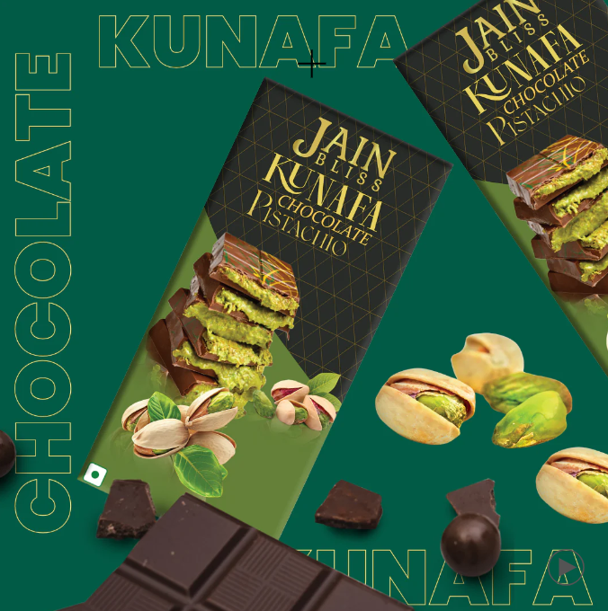

Kunafa Chocolate

Prep Time: 20 minutes
Cook Time: 30 minutes
Serves: 4-6 people
- 200g Kunafa dough
- 100g Milk Chocolate
- 50g Dark Chocolate
- 50g Butter
- 1/4 cup Heavy Cream
- 1/2 cup Crushed Pistachios
- 1/4 cup Sugar
- 1 teaspoon Rose Water
- 1 tablespoon Orange Blossom Water (optional)
- 1 tablespoon Honey
- Preheat your oven to 180°C (350°F).
- Melt the milk and dark chocolate together with butter and cream in a double boiler or microwave.
- Mix in the sugar, rose water, and orange blossom water (if using). Stir until smooth.
- Layer the kunafa dough in a baking dish, pressing it down firmly.
- Pour half of the melted chocolate mixture over the kunafa dough and spread evenly.
- Top with a layer of crushed pistachios.
- Add the remaining chocolate mixture and bake for 25-30 minutes until the kunafa turns golden brown and crispy.
- Once baked, drizzle honey over the top and let it rest for 10 minutes before serving.